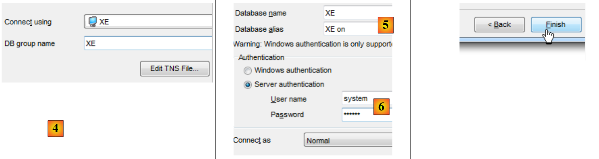
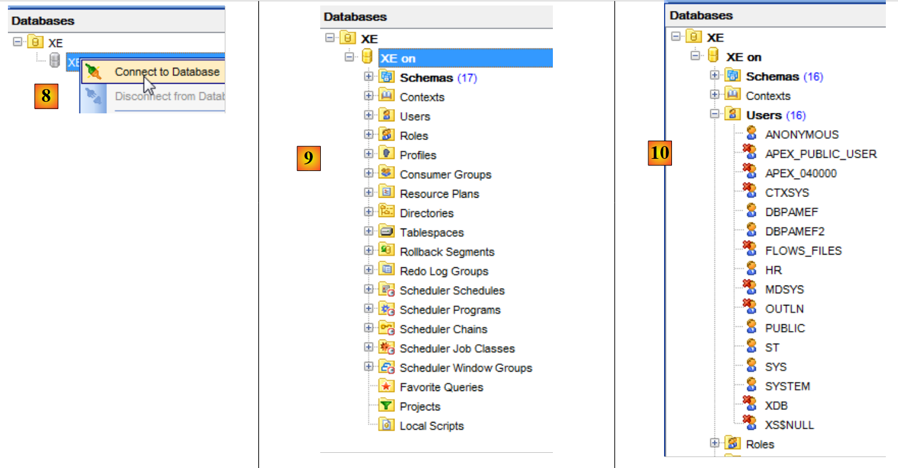
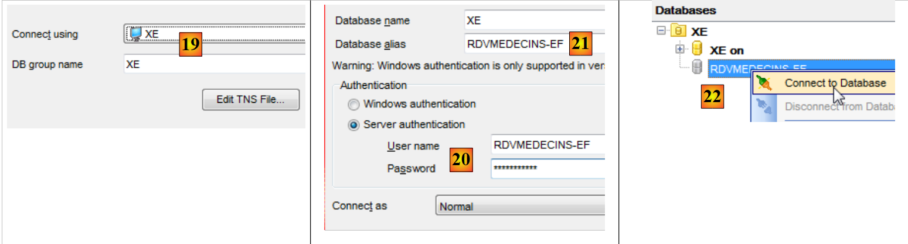

5. Estudo de caso com o Oracle Database Express Edition 11g Release 2
5.1. Instalação das ferramentas
As ferramentas a instalar são as seguintes:
- o SGBD: [http://www.oracle.com/technetwork/products/express-edition/downloads/index.html];
- uma ferramenta de administração: EMS SQL Manager for Oracle Freeware [http://www.sqlmanager.net/fr/products/oracle/manager/download];
- um cliente Oracle para .NET: ODAC 11.2 Release 5 (11.2.0.3.20) com as Ferramentas de Desenvolvimento Oracle para o Visual Studio: [http://www.oracle.com/technetwork/developer-tools/visual-studio/downloads/index.html].
Nos exemplos que se seguem, o utilizador «system» tem a palavra-passe «system».
Vamos iniciar o Oracle [1] e, em seguida, a ferramenta [SQL Manager Lite for Oracle], com a qual iremos administrar o SGBD e o [2].
 |
- no [3], ligamo-nos a uma base de dados existente;
 |
- no [4], utilizamos o serviço Oracle XE para estabelecer a ligação;
- em [5], indicamos o nome da base de dados XE;
- em [6], ligamo-nos como system / system;
- no [7], encerra-se o assistente;
 |
- em [8], efetua-se a ligação à base de dados;
- em [9], estamos ligados;
- uma vez que nos ligámos como o utilizador system / system, que possui direitos alargados, poderemos, por exemplo, gerir os utilizadores [10];
 |
- em [11], criamos um novo utilizador;
- em [12], este passará a chamar-se [RDVMEDECINS-EF];
- em [13], e terá a palavra-passe rdvmedecins;
- em [14], valida-se a criação do utilizador;
- em [15], o utilizador foi criado;
 |
- em [16], o utilizador [RDVMEDECINS-EF] é também um esquema de base de dados;
- em [17], o utilizador, tal como foi criado, não possui direitos suficientes. Atribuímos-lhe esses direitos através de um script SQL;
 |
- no [18], o script executado;
- em [19], vamos tentar iniciar sessão com a identidade de [RDVMEDECINS-EF] para ver o que ele pode fazer. Para tal, começamos por registar uma nova base de dados em [EMS Manager];
 |
- no [19], ligamo-nos através do serviço XE;
- no [20], iniciamos sessão com a identidade RDVMEDECINS-EF / rdvmedecins;
- em [21], atribui-se um alias que reflete o nome do utilizador que iniciou sessão;
- em [22], efetua-se a ligação ao Oracle com as informações fornecidas;
 |
 |
- No [22], conseguimos estabelecer a ligação;
- em [23], tentamos criar uma tabela no esquema [RDVMEDECINS-EF];
- em [24], define-se uma tabela qualquer;
- no [25], valida-se a sua definição;
 |
- em [26], a tabela foi criada. Eliminamo-la;
- em [27], foi eliminada.
Agora que temos um utilizador com direitos suficientes, vamos criar o projeto VS 2012, que irá criar as tabelas do esquema [RDVMEDECINS-EF] a partir da definição das entidades.
5.2. Criação da base de dados a partir das entidades
Começamos por duplicar a pasta do projeto [RdvMedecins-SqlServer-01] em [RdvMedecins-Oracle-01] e [1]:
 |
- em [2]; em VS 2012, eliminamos o projeto [RdvMedecins-SqlServer-01] da solução;
 |
- em [3], o projeto foi eliminado;
- em [4], adicionamos outro. Este está incluído na pasta [RdvMedecins-Oracle-01] que criámos anteriormente;
 |
- em [5], o projeto carregado chama-se [RdvMedecins-SqlServer-01];
- em [6], alteramos o seu nome para [RdvMedecins-Oracle-01]
 |
- em [7], adiciona-se outro projeto à solução. Este encontra-se na pasta [RdvMedecins-SqlServer-01] do projeto que eliminámos anteriormente da solução;
- no [8], o projeto [RdvMedecins-SqlServer-01] foi reintegrado na solução.
O projeto [RdvMedecins-Oracle-01] é idêntico ao projeto [RdvMedecins-SqlServer-01]. Temos de fazer algumas alterações. No [App.config], vamos alterar a cadeia de ligação e o [DbProviderFactory], que temos de adaptar a cada SGBD.
<!-- cadeia de ligação à base de dados -->
<connectionStrings>
<add name="monContexte" connectionString="Data Source=(DESCRIPTION=(ADDRESS_LIST=(ADDRESS=(PROTOCOL=TCP)(HOST=localhost)(PORT=1521)))(CONNECT_DATA=(SERVER=DEDICATED)(SERVICE_NAME=XE)));User Id=RDVMEDECINS-EF;Password=rdvmedecins;" providerName="Oracle.DataAccess.Client" />
</connectionStrings>
<!-- o provedor de fábrica -->
<system.data>
<DbProviderFactories>
<remove invariant="Oracle.DataAccess.Client" />
<add name="Oracle Data Provider for .NET" invariant="Oracle.DataAccess.Client" description="Oracle Data Provider for .NET" type="Oracle.DataAccess.Client.OracleClientFactory, Oracle.DataAccess, Version=4.112.3.0, Culture=neutral, PublicKeyToken=89b483f429c47342" />
</DbProviderFactories>
</system.data>
- linha 3: o utilizador e a sua palavra-passe;
- linhas 6-11: o DbProviderFactory. A linha 9 faz referência a um DLL e a um [Oracle.DataAccess] que não temos. Adquire-se através do NuGet e do [1]:
 |
- no [2], na área de pesquisa, introduz-se a palavra-chave oracle;
- no [3], selecione o pacote [Oracle Data Provider] adequado. Trata-se do conector ADO.NET da Oracle;
 |
- em [4], a referência adicionada;
- em [5], no [App.config], é necessário indicar a versão correta do DLL. Esta encontra-se nas suas propriedades.
No ficheiro [Entites.cs], é necessário adaptar o esquema das tabelas que vão ser geradas. O esquema utilizado é o nome do utilizador proprietário das tabelas.
[Table("MEDECINS", Schema = "RDVMEDECINS-EF")]
public class Medecin : Personne
{...}
[Table("CLIENTS", Schema = "RDVMEDECINS-EF")]
public class Client : Personne
{...}
[Table("RVS", Schema = "RDVMEDECINS-EF")]
public class Rv
{...}
[Table("CRENEAUX", Schema = "RDVMEDECINS-EF")]
public class Creneau
{...}
Configuramos a execução do projeto:
 |
- em [1], atribuímos outro nome ao assembly que vai ser gerado;
- em [2], definimos também outro espaço de nomes por predefinição;
- em [3], indicamos o programa a executar.
Nesta fase, não há erros de compilação. Vamos executar o programa [CreateDB_01]. Obtém-se a seguinte exceção:
Recordamo-nos de ter tido o mesmo erro com o MySQL. Está relacionado com o tipo do campo Timestamp das entidades. Fazemos a mesma alteração. Nas entidades, substituímos as três linhas
[Column("TIMESTAMP")]
[Timestamp]
public byte[] Timestamp { get; set; }
pelas seguintes:
[ConcurrencyCheck]
[Column("VERSIONING")]
public int? Versioning { get; set; }
Alteramos, portanto, o tipo da coluna, que passa de byte[] para int?. Recorde-se que, tanto para o SQL Server como para o MySQL, a coluna das tabelas que servia para gerir a concorrência de acesso recebia um valor do SGBD sempre que uma linha era inserida ou alterada. A partir de agora, vamos utilizar um campo de entidade que será um inteiro. No SGBD, utilizaremos procedimentos armazenados para incrementar esse inteiro em uma unidade, sempre que uma linha for inserida ou alterada.
Efetuaremos a alteração anterior nas quatro entidades e, em seguida, reexecutaremos a aplicação. Obteremos então o seguinte erro:
A linha 1 indica que o conector ADO.NET da Oracle não consegue eliminar a base de dados existente. Recorde-se o que acontece. O código do [CreateDB_01.cs] é o seguinte:
using System;
using System.Data.Entity;
using RdvMedecins.Models;
namespace RdvMedecins_01
{
class CreateDB_01
{
static void Main(string[] args)
{
// criamos a base de dados
Database.SetInitializer(new RdvMedecinsInitializer());
using (var context = new RdvMedecinsContext())
{
context.Database.Initialize(false);
}
}
}
}
A linha 15 inicia a execução da classe [RdvMedecinsInitializer] (linha 12). Esta é a seguinte:
public class RdvMedecinsInitializer : DropCreateDatabaseAlways<RdvMedecinsContext>
Esta deriva da classe [DropCreateDatabaseAlways], que tenta eliminar e, em seguida, recriar a base de dados. Alteramos a definição da classe para:
public class RdvMedecinsInitializer : CreateDatabaseIfNotExists<RdvMedecinsContext>
A criação da base de dados só ocorre se esta não existir. Executamos novamente o [CreateDB_01.cs] e, desta vez, já não há erros. No entanto, no [EMS Manager], verificamos que a base de dados [RDVMEDECINS-EF] permaneceu vazia. Como o EF 5 encontrou uma base de dados existente, não realizou nenhuma ação. Só realiza alguma ação se a base de dados não existir. A partir daí, entramos num ciclo vicioso. Com efeito, a cadeia de ligação ao SGBD é a seguinte:
<connectionStrings>
<add name="monContexte" connectionString="Data Source=(DESCRIPTION=(ADDRESS_LIST=(ADDRESS=(PROTOCOL=TCP)(HOST=localhost)(PORT=1521)))(CONNECT_DATA=(SERVER=DEDICATED)(SERVICE_NAME=XE)));User Id=RDVMEDECINS-EF;Password=rdvmedecins;" providerName="Oracle.DataAccess.Client" />
</connectionStrings>
Na linha 2, a cadeia de ligação não utiliza o nome de uma base de dados, mas sim o nome de um utilizador. Este tem de existir.
Somos, então, levados a criar manualmente a base de dados [RDVMEDECINS-EF] com a ferramenta [EMS Manager for Oracle]. Não descrevemos todas as etapas, mas apenas as mais importantes.
A base de dados Oracle será a seguinte:
As tabelas
 |
As diferentes tabelas possuem as chaves primárias e estrangeiras que essas mesmas tabelas tinham nos dois exemplos anteriores. As chaves estrangeiras têm, nomeadamente, o atributo ON, DELETE e CASCADE.
As sequências
Foram criadas aqui sequências Oracle. Trata-se de geradores de números consecutivos. Existem 5: [1].
 |
- em [2], vemos as propriedades da sequência [SEQUENCE_CLIENTS]. Esta gera números consecutivos de 1 em 1, a partir de 1 até um valor muito grande.
Todas as sequências seguem o mesmo modelo.
- [SEQUENCE_CLIENTS] será utilizada para gerar a chave primária da tabela [CLIENTS];
- [SEQUENCE_MEDECINS] será utilizada para gerar a chave primária da tabela [MEDECINS];
- [SEQUENCE_CRENEAUX] será utilizada para gerar a chave primária da tabela [CRENEAUX];
- [SEQUENCE_RVS] será utilizada para gerar a chave primária da tabela [RVS];
- [SEQUENCE_VERSIONS] será utilizada para gerar os valores das colunas [VERSIONING] de todas as tabelas.
Os gatilhos
Um trigger é um procedimento executado pelo SGBD antes ou depois de um evento (inserção, modificação, eliminação) numa tabela. Temos 8 [1]:
 |
Vejamos o código DDL do trigger [TRIGGER_PK_CLIENTS] que preenche a chave primária da tabela [CLIENTS]:
- linhas 1-5: antes de cada operação INSERT na tabela [CLIENTS];
- linha 6: a coluna [ID] assumirá o valor seguinte da sequência [SEQUENCE_CLIENTS]. A chave primária terá, assim, valores consecutivos fornecidos pela sequência.
Os gatilhos [TRIGGER_PK_MEDECINS, TRIGGER_PK_CRENEAUX, TRIGGER_PK_RVS] são análogos.
Vejamos o código DDL do trigger [TRIGGER_VERSIONS_CLIENTS] que alimenta a coluna [VERSIONING] da tabela [CLIENTS]:
- linhas 1-2: antes de cada operação INSERT ou UPDATE na tabela [CLIENTS];
- linha 8: a coluna [VERSIONING] assumirá o valor seguinte da sequência [SEQUENCE_VERSIONS]. A coluna [VERSIONING] terá, assim, valores consecutivos fornecidos pela sequência.
Os gatilhos [TRIGGER_VERSION_MEDECINS, TRIGGER_VERSION_CRENEAUX, TRIGGER_VERSION_RVS] funcionam de forma semelhante. As quatro colunas [VERSIONING] obtêm os seus valores da mesma sequência.
O script de geração das tabelas da base de dados Oracle [RDVMEDECINS-EF] foi colocado na pasta [RdvMedecins / databases / oracle]. O leitor poderá carregá-lo e executá-lo para criar as suas tabelas.
Feito isto, os diferentes programas do projeto podem ser executados. Estes produzem os mesmos resultados que com o SQL Server, exceto no caso do programa [ModifyDetachedEntities], que entra em falha pela mesma razão que tinha entrado em falha com o MySQL. O problema resolve-se da mesma forma. Basta copiar o programa [ModifyDetachedEntities] do projeto [RdvMedecins-MySQL-01] para o projeto [RdvMedecins-Oracle-01]. Surge então um novo problema:
- linhas 1-4: o cliente destacado foi efetivamente atualizado;
- linha 6: uma exceção conhecida. É aquela que ocorre quando se tenta alterar uma entidade sem ter a versão correta. No entanto, neste caso, não se pretendia alterar, mas sim eliminar a entidade:
// eliminação de entidade fora do contexto
using (var context = new RdvMedecinsContext())
{
// aqui, temos um novo contexto vazio
// colocamos o cliente1 no contexto num estado eliminado
context.Entry(client1).State = EntityState.Deleted;
// guardamos o contexto
context.SaveChanges();
}
EF 5 recusou-se a eliminar client1 da base de dados, porque client1 (linha 6) não tinha a mesma versão. Não tínhamos encontrado este problema com o MySQL. Aos poucos, percebemos que os conectores ADO.NET de diferentes SGBD apresentam ligeiras diferenças. Corrigimos da seguinte forma:
using (var context = new RdvMedecinsContext())
{
// aqui, temos um novo contexto vazio
// colocamos o «client1» no contexto para o eliminar
context.Clients.Remove(context.Clients.Find(client1.Id));
// o contexto é guardado
context.SaveChanges();
}
e funciona.
5.3. Arquitetura multicamadas baseada em EF 5
Voltamos ao nosso caso de estudo descrito no parágrafo 2, página 7.
 |
Vamos começar por construir a camada [DAO] de acesso aos dados. Para tal, duplicamos o projeto de consola VS 2012 [RdvMedecins-SqlServer-02] em [RdvMedecins-Oracle-02] [1]:
 |
- em [2], eliminamos o projeto [RdvMedecins-SqlServer-02];
 |
- em [3], adiciona-se um projeto existente à solução. Este é retirado da pasta [RdvMedecins-Oracle-02] que acabou de ser criada;
- em [4], o novo projeto tem o nome do que foi eliminado. Vamos alterar o seu nome;
 |
- em [5], alterámos o nome do projeto;
- em [6], alteramos algumas das suas propriedades, como, neste caso, o nome do assembly;
- em [7], a pasta [Models] é eliminada para ser substituída pela pasta [Models] do projeto [RdvMedecins-Oracle-01]. Com efeito, os dois projetos partilham os mesmos modelos.
 |
- em [8], as referências atuais do projeto;
- em [9], foi adicionado o conector ADO.NET da Oracle com a ferramenta NuGet.
No ficheiro [App.config], substituem-se as informações da base de dados SQL Server pelas da base de dados Oracle. Estas encontram-se no ficheiro [App.config] do projeto [RdvMedecins-Oracle-01]:
<!-- cadeia de ligação à base de dados -->
<connectionStrings>
<add name="monContexte" connectionString="Data Source=(DESCRIPTION=(ADDRESS_LIST=(ADDRESS=(PROTOCOL=TCP)(HOST=localhost)(PORT=1521)))(CONNECT_DATA=(SERVER=DEDICATED)(SERVICE_NAME=XE)));User Id=RDVMEDECINS-EF;Password=rdvmedecins;" providerName="Oracle.DataAccess.Client" />
</connectionStrings>
<!-- o provedor de fábrica -->
<system.data>
<DbProviderFactories>
<remove invariant="Oracle.DataAccess.Client" />
<add name="Oracle Data Provider for .NET" invariant="Oracle.DataAccess.Client" description="Oracle Data Provider for .NET" type="Oracle.DataAccess.Client.OracleClientFactory, Oracle.DataAccess, Version=4.112.3.0, Culture=neutral, PublicKeyToken=89b483f429c47342" />
</DbProviderFactories>
</system.data>
Os objetos geridos pelo Spring também se alteram. Atualmente, temos:
<!-- configuração do Spring -->
<spring>
<context>
<resource uri="config://spring/objects" />
</context>
<objects xmlns="http://www.springframework.net">
<object id="rdvmedecinsDao" type="RdvMedecins.Dao.Dao,RdvMedecins-SqlServer-02" />
</objects>
</spring>
A linha 7 faz referência ao assembly do projeto [RdvMedecins-SqlServer-02]. O assembly é agora [RdvMedecins-Oracle-02].
Feito isto, estamos prontos para executar o teste da camada [DAO]. Antes disso, é necessário preencher a base de dados (programa [Fill] do projeto [RdvMedecins-Oracle-01]). O programa de teste é bem-sucedido.
Criamos o DLL do projeto, tal como foi feito para o projeto [RdvMedecins-SqlServer-02], e reunimos oconjunto de DLL do projeto numa pasta [lib] criada em [RdvMedecins-Oracle-02]. Estas serão as referências do projeto web [RdvMedecins-Oracle-03] que se seguirá.
 |
Estamos agora prontos para construir a camada [ASP.NET] da nossa aplicação:
 |
Vamos partir do projeto [RdvMedecins-SqlServer-03]. Duplicamos a pasta deste projeto em [RdvMedecins-Oracle-03] e [1]:
 |
- em [2], com o VS 2012 Express para a Web, abrimos a solução da pasta [RdvMedecins-Oracle-03];
- em [3], alteramos tanto o nome da solução como o nome do projeto;
 |
- no [4], as referências atuais do projeto;
- em [5], eliminamo-las;
- em [6], para as substituir por referências ao DLL que acabámos de guardar numa pasta [lib] do projeto [RdvMedecins-Oracle-02].
Resta-nos apenas modificar o ficheiro [Web.config]. Substituímos o seu conteúdo atual pelo conteúdo do ficheiro [App.config] do projeto [RdvMedecins-Oracle-02]. Feito isto, executamos o projeto web. Funciona. Não nos esqueçamos de preencher a base de dados antes de executar a aplicação web.